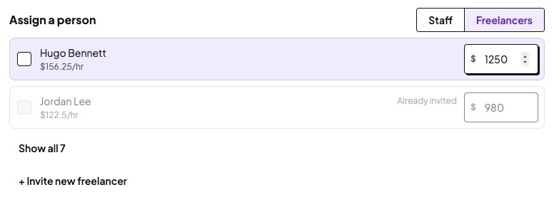
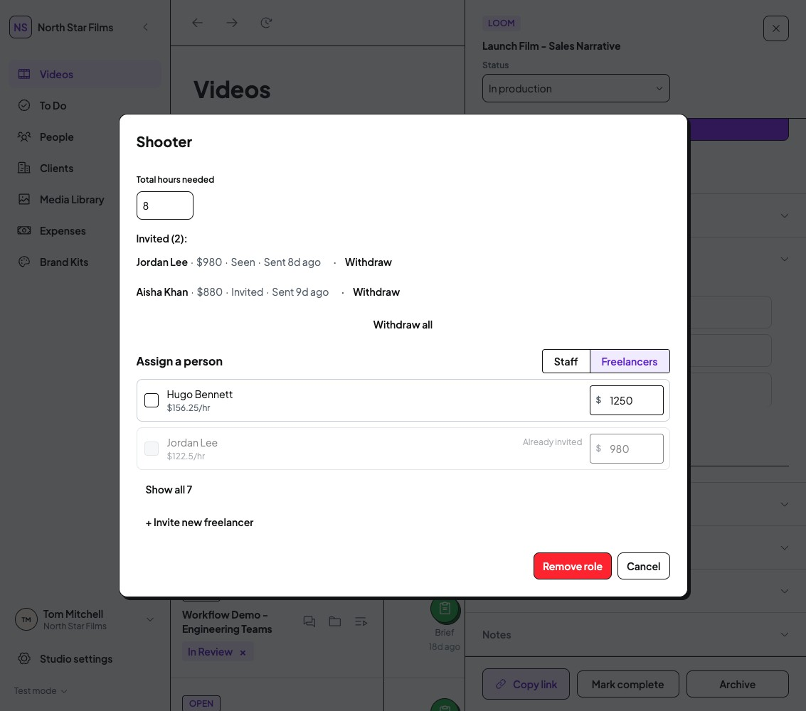
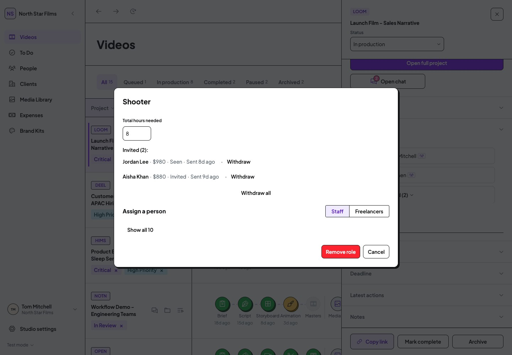

Implemented - review the current resultOpen the implemented Team result and checks. Tom approved the expanded design; the actual application now includes the refined Team panel and direct Videos assignment. Awaiting visual sign-off.
The earlier proposal and comparison below are retained as historical context.
Visual proposal for TomOpen the interactive Team design preview - Videos entry, refined Team panel and assignment with required hours and project cost. Proposal only; no Team implementation or working-data changes.
Desktop audit · To Do: signed off · Plans: deferredProposal only · awaiting Tom's agreement
Next priority: Team assignment
Latest requirement: assignment must be directly discoverable from Videos. Review the revised entry and click targets. The editor-only proposal below is not the full latest scope.
Mobbin reassessment: Tom asked whether this is the best overall approach. Review the references and revised structure recommendation before choosing between the small repair pass and a broader local simplification.
Make choosing a person easier and clarify what the rate field means. Keep the distinct Staff, Freelancer, assignment and invitation workflows.
Why this comes next
Tom deferred plan comparison. Team selection is the next unresolved first-batch audit item: B01 affects the shared Staff/Freelancer controls. The same focused pass can clarify the project-rate column and the empty Staff shortlist without redesigning Team.
What is already good
Staff availability and capacity help assignment decisions. Freelancer rows keep an hourly reference beside the project amount. Invite and Assign now are separate actions, selected people are not committed immediately, and Already invited / Already on project states prevent duplicates. Preserve these useful distinctions.
Current Freelancer rows

Genuine current crop · Videos > Launch Film > Team > Shooter > Freelancers · Studio Staff ·1440 x1000. Click for full context. The checkbox name is empty in the accessibility tree; that fact is verified through DOM and source, not visible pixels alone.The name sits beside a custom24px selection label rather than naming it. The approved Checkbox already provides a20px visual square,44px target, check asset and visible keyboard-focus states. The improvement is mainly integration and labelling, not a new appearance.
The three recommended changes
TP01 · B01 · Needs decisionMake person selection clear and dependable
Current: Staff and Freelancer checkboxes have empty accessible names and24 x24px click targets. Their custom checked mark and focus handling bypass the approved DS control.
Proposed: Use the existing DS Checkbox, associate it with the visible person name and keep the approved44px target and focus treatment. Make the name/selection area clickable; keep capacity metadata and the project-rate input independently operable.
A small shared-control repair improves pointer selection, keyboard orientation and person identification without changing who can be selected.
Observed defect and DS-standard violation. Do not make the entire Freelancer row a label: it contains a separate rate input. Keep Staff single-selection with deselection and Freelancer multi-selection; no radio conversion.
TP02 · New scoped refinement, no defect-total inflation · Needs decisionName the project-rate column
Current: The row shows a person’s hourly reference under their name and a dollar input on the right. “Project rate for Hugo Bennett” exists for assistive technology, but the visible column has no Project rate heading.
Proposed: Add a small visible “Project rate” heading above the Freelancer amount column. Keep person identity and hourly reference on the left, existing total project-rate input on the right, and align the rows consistently.
This distinguishes the hourly reference from the project amount without adding fields or explanatory clutter.
Heuristic UI-clarity judgement; not a demonstrated user failure. Use one column heading rather than repeat the label on every row. Do not change rates, rounding, calculations, defaults or save boundaries; preserve person-specific accessible input names.
TP03 · B10 · Needs decisionExplain an empty Staff shortlist
Current: Shooter > Staff has no suggested people and shows only Show all10. It does not explain that the shortlist, rather than the Studio team, is empty.
Proposed: Add one quiet line: “No suggested Staff for Shooter.” Keep the existing Show all10 action and current filtering. Use the role’s existing label for other roles.
Clarifies the scope of the empty result with a single line and keeps the next action obvious.
Observed empty presentation; heuristic recommendation. No illustration, new invitation action or automatic expansion to all Staff. Those would add noise or change behaviour.
Current versus approved component reference
Current Team ·1133px

Freelancers · unnamed custom person controls and independent rate inputs. Expanded Staff list uses the same custom control.Approved DS Checkbox in current use
Notifications ·1133 x1000, pixel crop at original scale. Labelled44px rows, approved20px square and DS states. This is a component reference, not a full Team-row layout specification. The actual target dimensions were measured.Keep the checkbox visual size. Broaden the named person-selection area without absorbing the separate Freelancer rate field or interactive capacity indicator.
The empty Staff shortlist

Current Staff shortlist ·1440 x1000. Existing people become available through Show all10.Proposed copy: “No suggested Staff for Shooter.”
Keep it quiet and close to Show all. This explains that the suggested subset is empty; it does not imply the Studio has no Staff or that everyone is unavailable.
This is a small design judgement from the observed empty presentation. No user-research result or demonstrated failure is claimed. Showing all Staff automatically is an alternative, but changes filtering and is outside this proposal.
Scope and safeguards
Retain Staff single-selection and deselection, Freelancer multi-selection, role hours, project-rate inputs, calculations, disabled reasons and current invitations. Do not merge selecting, assigning and inviting. The rate input stays independently labelled and operable.
Keep the existing dialog footprint and action hierarchy. Tab semantics, invitation/withdrawal management, broader footer redesign, rates policy and mobile are separate work. No plan-comparison changes will be made.
Source, authority and evidence
Supporting proposal register · Current control measurements · Reference measurements · Crop traceability.
No exact approved replacement screenshot exists for Team rows. The shared Checkbox is the approved primitive; the visible Project rate heading and empty copy require Tom agreement. No external example is needed to resolve this integration issue.
Inspection and preservation
Fresh demo origin8775 began with zero local/session storage keys. Existing Shooter Staff/Freelancer states were inspected at1440 and1133. Space selected and deselected Hugo only in a local draft. Invite and Assign now appeared as separate actions; neither was invoked. Cancel closed the editor. No assignment, invitation, withdrawal, removal or settings save was executed.
Reference Notifications was viewed without changing a setting. Default mock initialisation stayed in the isolated demo. Viewport was restored and the temporary tab closed. Working-origin app pages were not opened. DOM names and keyboard selection were checked; no screen-reader session or formal accessibility compliance claim.
Restricted roles and the project-page consumer were source reviewed, not browser-retested in this focused proposal. Verify those after approval.
Verification after approval
Check both desktop widths, Staff/Freelancer rows, expanded/empty/disabled/selected states, person-specific names,44px target and visible focus. Verify name clicks select while rate edits/capacity controls do not; preserve deselection, one-versus-many selection and action eligibility. Check the shared project consumer, role restrictions, unchanged rates/calculations, Cancel, type check, route and source preservation. No invitation needs to be sent.
Decision for Tom
Approve these three focused refinements: shared named checkbox treatment, visible Project rate heading, and one-line empty-shortlist explanation. Review the implemented result before moving on.
All recommendations remain Needs decision. No application code changed in this review.